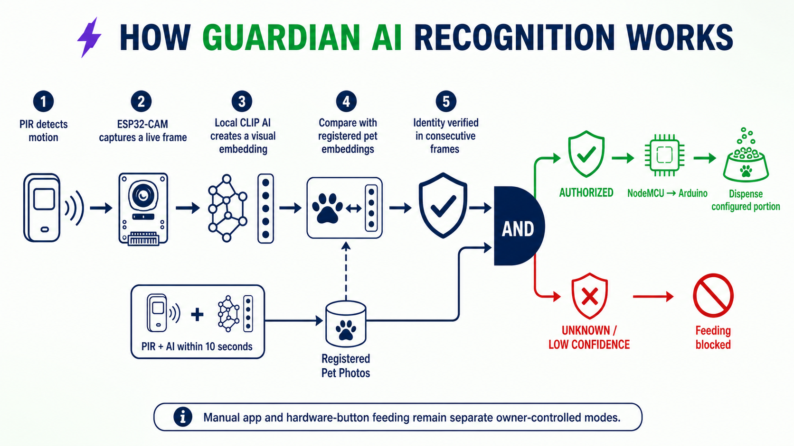
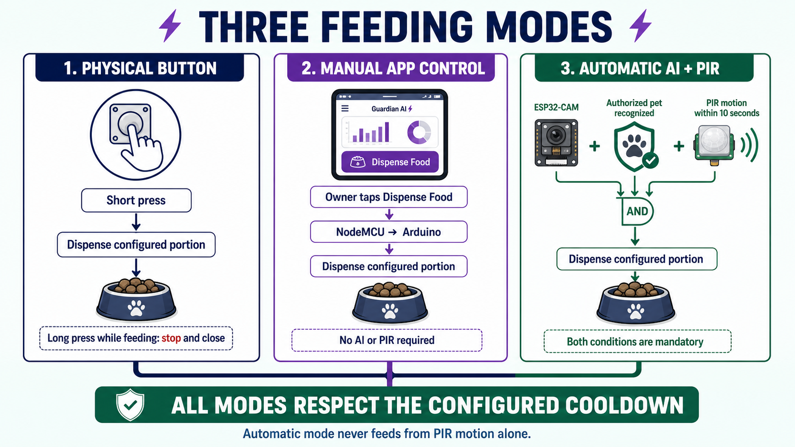
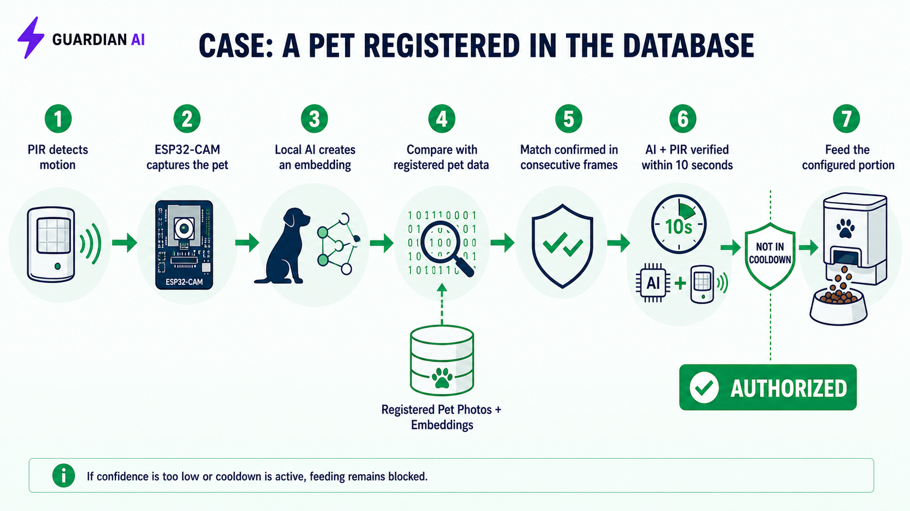
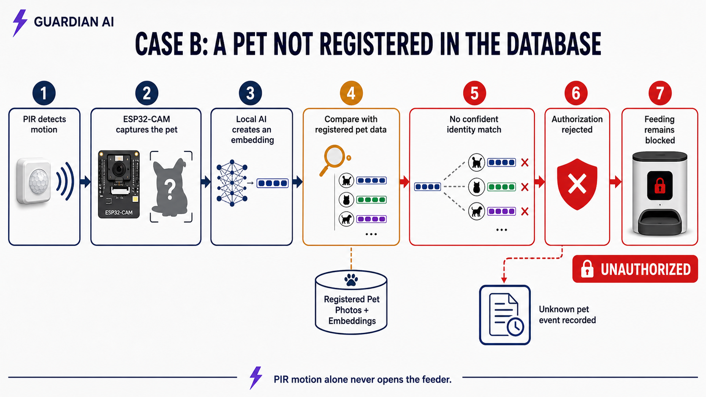

This document presents the complete prototype in seven concise chapters, following the path from image capture to safe food dispensing.
Defines the problem, the design objectives and the role of each hardware and software component.
Describes the controller, camera, Wi-Fi bridge, sensors, actuator and the three available feeding methods.
Explains enrollment, CLIP embeddings, similarity scoring and the authorization decision.
Covers the main pages, portion control, timed calibration, food estimation, cooldown and camera configuration.
Shows how the system records activity and informs the owner about feeding, food level, temperature and recognition events.
Summarizes fail-safe rules, acceptance tests and the practical limits of general-purpose visual embeddings.
Evaluates the prototype and identifies the most useful improvements for a future production version.
Guardian AI was designed to solve a specific problem: a motion sensor can prove that something is near the feeder, but it cannot determine which animal is present. A camera classifier alone is also insufficient because an uncertain frame, a network error or a visually similar subject could lead to an unsafe decision. The prototype therefore separates recognition, presence confirmation and mechanical control.

Provides a live MJPEG stream and individual JPEG captures. It does not run the identity model and cannot directly activate the servo.
Runs CLIP through Transformers.js, stores reference embeddings by pet ID and returns ranked similarity results.
Manage profiles, settings, recognition records, telemetry, history and commands. The application validates the returned pet ID.
NodeMCU bridges Wi-Fi and UART. Arduino owns the state machine, PIR input, timed dispensing, LCD feedback and cooldown.
The final actuator decision remains deterministic even if the browser closes after sending the request. Conversely, losing the camera, the AI service or the serial acknowledgement cannot be interpreted as authorization.

| Function | Pin |
|---|---|
| Servo / physical button | D7 / D2 |
| PIR / DHT11 | D11 / D3 |
| Buzzer / status LEDs | D8 / A1–A2 |
| UART to NodeMCU | D10 RX / D12 TX |
A short press in standby dispenses the configured portion. Holding the button during feeding closes the gate and enters cooldown.
The owner can dispense immediately without AI or PIR. The bridge first applies the current portion and rejects the request during cooldown.
The application authorizes a registered identity; Arduino then waits for fresh motion for approximately ten seconds before dispensing.
The prototype does not currently weigh the food continuously with a load cell. Dispensed mass is estimated from the calibrated flow rate and the time for which the gate remains open.
When the target time is reached, Arduino closes and detaches the servo, records the estimated quantity and starts the configured cooldown. The LCD shows the active state and its countdown.
The recognition engine runs on a local computer because the ESP32-CAM does not have sufficient memory or processing capacity for reliable visual embeddings. Reference images are converted into normalized vectors with the quantized CLIP ViT-B/32 model and stored locally in data/pets.json.
Enrollment: 15–30 varied photographs are associated with the immutable pet ID. Different angles, distances and lighting conditions reduce dependence on the background.
Feature extraction: each image becomes a normalized embedding. Normalization allows the dot product to represent cosine similarity.
Ranking: the live embedding is compared with every stored reference. The score for each pet is the average of its best three matches.
Decision: the best score must pass the configured threshold and remain sufficiently separated from the second candidate.

A positive match only creates a temporary authorization. It does not open the feeder by itself. NodeMCU sends CMD:WAIT_MOTION, and Arduino requires a fresh HIGH signal from the PIR input.

Another animal, a toy, a person, an empty frame or an ambiguous comparison returns UNAUTHORIZED. PIR motion cannot override this result because PIR confirms presence, not identity.
The default server threshold is 0.88 and the default minimum margin is 0.04. These values are not medical probabilities; they are similarity criteria that must be evaluated with positive and negative test images. CLIP is a general visual model, not a biometric pet model, so very similar subjects may require a higher threshold, better enrollment data or a dedicated fine-tuned model.
The React application is the operator interface for the complete system. Authentication is handled through Clerk, while Convex stores user profiles, registered pets, device settings, telemetry, recognition events, feeding history and notifications. The Live Camera page captures frames, calls the local AI server and sends only validated commands to NodeMCU.
| Area | Purpose |
|---|---|
| Dashboard | Current device state, latest feeding, remaining food estimate, latest recognized subject and camera preview. |
| Live Camera | Real-time stream, manual capture, automatic scanning, recognition result and manual dispense button. |
| Registered Pets | Pet identity, species, breed, age, weight, body condition, nutritional data and enrollment photographs. |
| History and Health Insights | Completed or failed feedings, consumption telemetry and local recommendations based on the configured profile. |
| Notifications | Feeding success, unrecognized subject, low food, excessive temperature and system warnings. |
| Settings | Hardware addresses, portion, calibration, cooldown, notification preferences and local AI/API configuration. |
The feeder opens for exactly five seconds. The user weighs the released food and enters the measured grams. Arduino calculates gramsPerSecond = measuredGrams / 5 and stores the value in EEPROM.
The requested grams are converted into opening time using the saved flow rate. Remaining food is an application estimate updated from recorded portions unless a real load-cell measurement is added.
The owner selects 1–720 minutes. The application synchronizes the value in seconds, Arduino enforces it locally and blocks subsequent non-forced requests until expiry.
The stream URL points to the ESP32-CAM. The recognition threshold and local server address determine where frames are evaluated and how conservative matching is.
Initial quantity and container capacity support the remaining-food estimate and low-level alerts. Refilling resets the estimate to the configured amount.
The user can enable or disable feeding-success, low-food and over-temperature notifications while critical device status remains visible in the interface.
Arduino reports heartbeat and telemetry approximately every ten seconds. NodeMCU posts temperature, humidity, estimated weight, RSSI and state to Convex. If valid serial activity is missing for about thirty seconds, the bridge reports the feeder offline even when Wi-Fi itself remains connected.
/feed endpoint is intentionally blocked.| Test | Expected result |
|---|---|
| Registered pet + new PIR motion | One configured portion, followed by cooldown. |
| Registered pet without motion | Authorization expires; no food is dispensed. |
| Unknown subject + PIR motion | Automatic feeding remains blocked. |
| Empty frame or AI server offline | Recognition fails safely; no automatic command. |
| Manual request during cooldown | Request is rejected and the remaining cooldown is preserved. |
| Physical button in standby | One configured portion is dispensed. |
| Missing Arduino heartbeat | Device is shown offline after the timeout. |
The dispensed weight is time-based and therefore depends on food shape, hopper level and mechanical consistency. A load cell would provide closed-loop mass control. Recognition quality depends on enrollment diversity and camera conditions; subject detection and cropping before CLIP would reduce background influence. Local HTTP endpoints should also receive authentication before deployment outside a trusted network.
Guardian AI demonstrates a complete smart-feeding workflow rather than a standalone image classifier. The camera captures evidence, the local server estimates identity, the application validates the result, NodeMCU transports commands and telemetry, and Arduino enforces the physical safety rules.
The most important design choice is the separation between identity and presence. AI answers which registered subject is visible, while PIR answers whether current physical movement is present. Requiring both signals, followed by deterministic portion timing and cooldown, makes the prototype safer and easier to test than a feeder activated by motion alone.